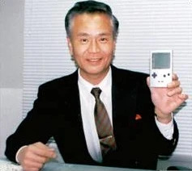
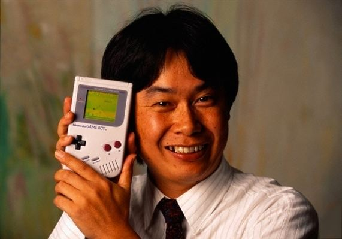

About Our Company
The Game Boy was designed by Nintendo's Research & Development 1 team. Led by Gunpei Yokoi and Satoru Okada, who were both instrumental in developing Nintendo hits Super Mario Bro's, Donkey Kong, and the Game & Watch Series. The inspiration for the Game Boy came after Yokoi observed a businessman on a train using a calculator. This led him to envision a portable device that could offer entertainment and relief instead of stress. The Game Boy is the culmination of that vision for you to enjoy

Gunpei Yokoi

Saturo Okada